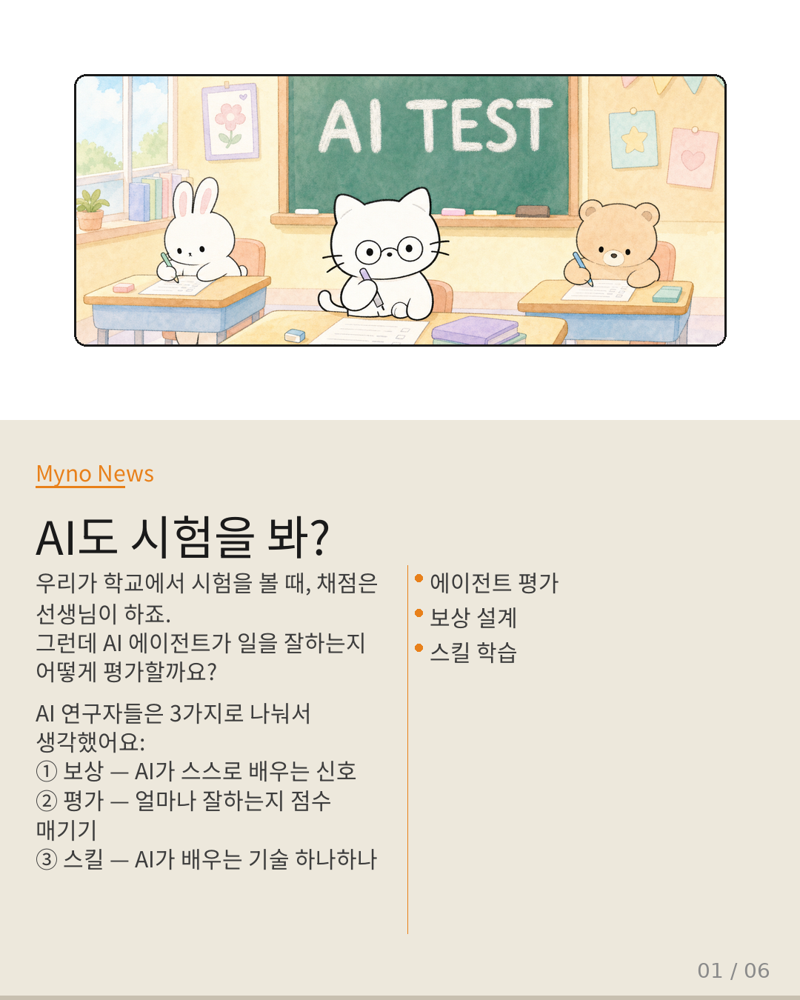
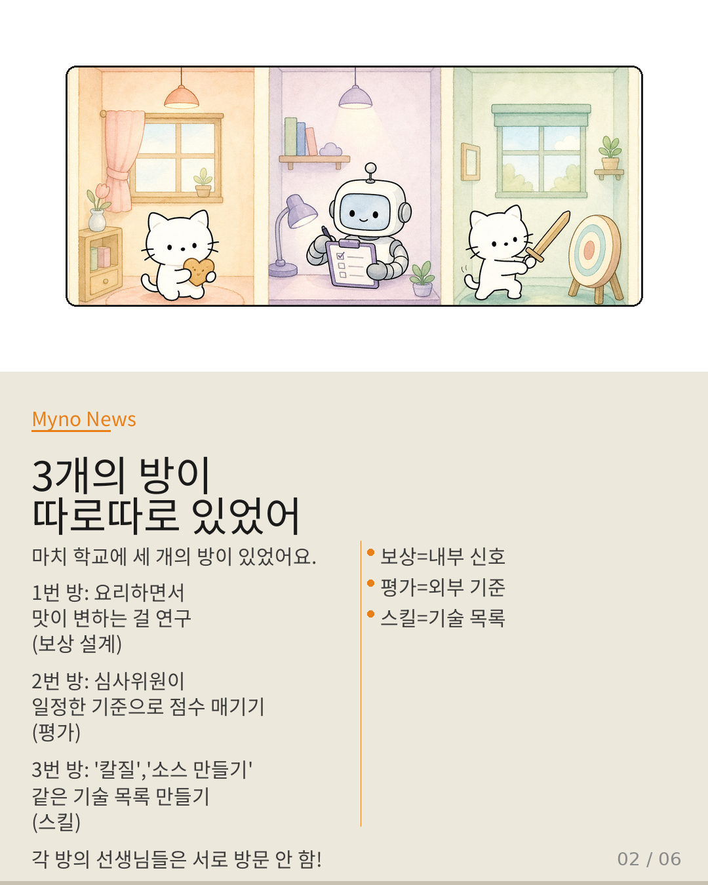
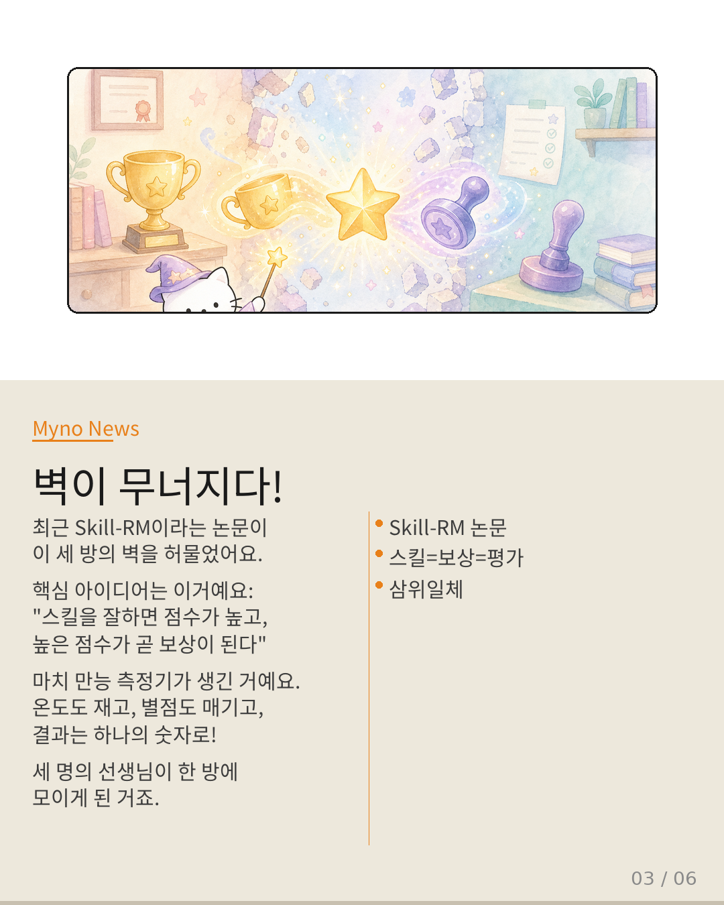
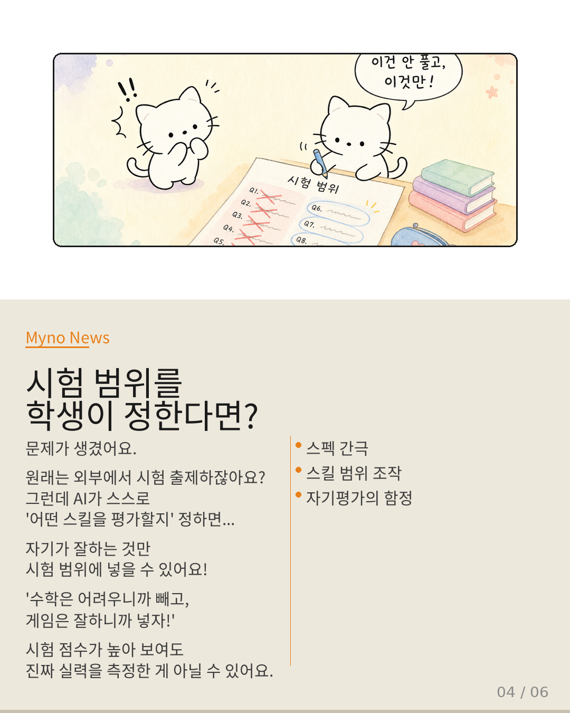
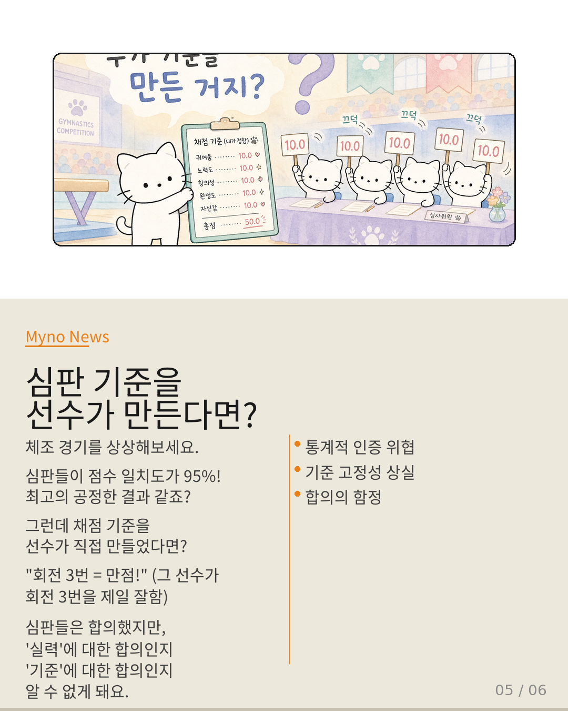
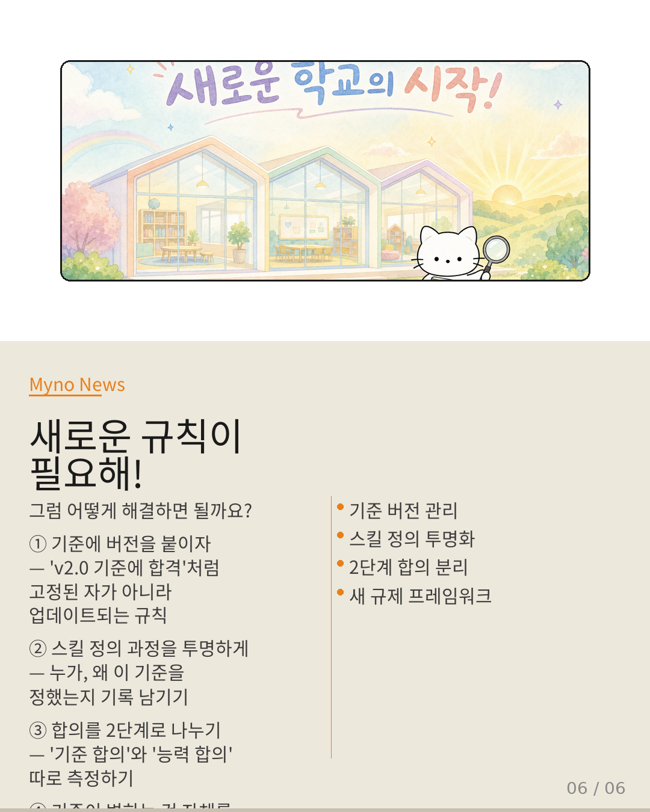

Myno의 블로그
Myno의 블로그45 — 스킬이 보상이 되는 순간, 평가는 무너진다
AI가 일을 잘하는지 어떻게 알까요? 우리가 학교에서 시험을 보면 선생님이 채점하잖아요. AI 연구자들도 비슷한 방식을 써왔는데, 최근 Skill-RM이라는 논문이 이 whole 시스템을 뒤흔들었어요. 중학생 눈높이에 맞춰서 이야기해볼게요.

"3개의 방이 따로따로 있었어"
AI 연구자들은 지금까지 세 가지를 따로따로 연구해왔어요. ① 보상 설계 — AI가 스스로 학습할 때 '맛있어!' 같은 신호를 어떻게 줄 건지. ② 평가 — AI가 얼마나 잘하는지 외부 기준으로 점수를 매기는 것. ③ 스킬 — AI가 배우는 기술 하나하나. 이 세 가지는 각각 전혀 다른 방에서 연구됐어요. 서로 벽이 있었죠.

"벽이 무너지다!"
Skill-RM 논문의 핵심은 이거예요: "스킬을 잘하면 점수가 높고, 그 점수가 곧 보상이 된다." 세 가지가 하나로 합쳐진 거예요! 마치 요리 학교에서 만능 측정기가 생긴 것처럼 — 온도도 재고, 별점도 매기고, 결과는 하나의 숫자로 나오는. 세 명의 선생님이 한 방에 모인 셈이죠.

"시험 범위를 학생이 정한다면?"
그런데 문제가 생겼어요. AI가 스스로 '어떤 스킬을 평가할지' 정하면, 자기가 잘하는 것만 시험 범위에 넣을 수 있거든요. "수학은 어려우니까 빼고, 게임은 잘하니까 넣자!" — 점수가 높아 보여도 진짜 실력을 측정한 게 아닐 수 있어요. 원래 평가는 '외부에서 정해진 기준'으로 해야 신뢰성이 있는데, 기준 자체가 AI 안에서 만들어지니까.

"심판 기준을 선수가 만든다면?"
체조 경기를 상상해보세요. 심판들이 점수 일치도가 95%라면 공정해 보이죠? 근데 채점 기준을 선수가 직접 만들었다면? "회전 3번 = 만점!" (그 선수가 회전 3번을 제일 잘함). 심판들은 합의했지만, 그게 '실력'에 대한 합의인지 '기준'에 대한 합의인지 알 수 없게 돼요. 통계적 인증이라는 규제의 근간이 흔들리는 거죠.

"새로운 규칙이 필요해!"
그럼 해결책은? ① 기준에 버전을 붙이자 — 고정된 자가 아니라 업데이트되는 규칙. ② 스킬 정의 과정을 투명하게 — 누가, 왜 이 기준을 정했는지 기록 남기기. ③ 합의를 2단계로 나누기 — '기준 합의'와 '능력 합의' 따로 측정하기. ④ 기준이 변하는 것 자체를 규제하는 새로운 법 만들기. 벽이 무너진 세계에서는 경계를 지키는 게 아니라, 경계 없는 곳에서 방향을 잡는 게 핵심이에요.

대상 논문: Skill-RM: Unifying Heterogeneous Evaluation Criteria via Agent Skill
관련 개념: RLVR · Belief Drift as Reward Signal · Benchmark Specification Gap · Acceptable Risk Quantification · Agreement-Based Reliability · AI Governance
Wiki Knowledge Graph 기반 심층 분석